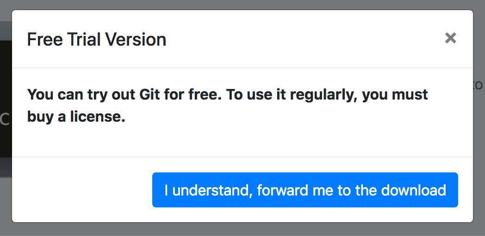
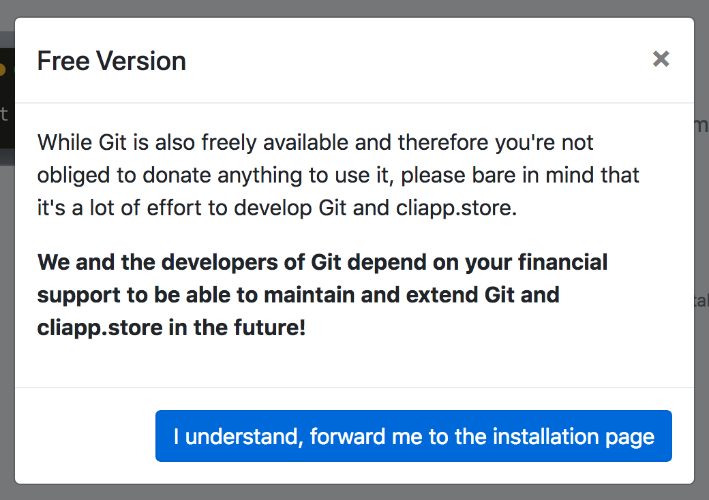

How I Screwed Up The Launch of cliapp.store
TLDR: A few days ago I launched the website cliapp.store. On Reddit it got only down votes, on Hacker News the post was flagged, and on Twitter it got mocked. I was crushed. In this post I want to explain what I did wrong and how I improved the website now to incorporate the feedback.
First of all a short recap: cliapp.store is an app store for CLI apps. I'm building it in the hope of establishing a platform were users can easily discover, buy, and download awesome CLI apps and where developers can more easily provide their apps and earn money to fund the development of the apps.
My first big mistake was to sell a set of popular open source CLI apps. While most of the profit (70%) would have been transferred to the original authors - just like in every other app store - this looked for many simply like a plain scam. Making money by selling free software of other people. Yikes.
While the Free Software Foundation actually encourages this, they also warn about calling it "selling software". I should have listened.
The reason they encourage it is that they see it as a means of amplifying the software's reach and making it available to people which might otherwise not receive the software. They also acknowledge that promoting and distributing the software is a valuable activity and must be compensated accordingly. Also make sure to read gratis vs. libre, if you are not familiar with the distinction yet.
To make matters worse, I thoughtlessly displayed a notice I had originally written for our self-developed CLI tool Transity beneath every app. While it made sense for our own app, it looked ridiculous for git:
"You can try out Git for free. To use it regularly, you must buy a license"

This is simply a lie. I can't define those terms for free software. And as cliapp.store wasn't even hosting it's own copy of git, but simply redirected to the original installation page this sounded pretty stupid in the best case and malicious / shady in the worst. 🤦♂️
The final big mistake was to have the explanation of our thoughts behind the website only presented on our blog post at feram.io and not also easily visible on the cliapp.store website itself. If someone wasn't arriving on the website via the blog post, but e.g. via a tweet of the link, it probably looked like a blatantly stupid scam.
So how did I fix it?
First of all, for free software I don't call it a payment anymore, but a donation. This makes no legal difference, but it makes clear that the software can also be obtained elsewhere without paying anything.
Secondly, I tried to make it abundantly clear that a donation is a sign of goodwill and not something I will force you to do.

And lastly, I added links to the previous launch post and to the follow up post you're reading right now to the landing page, so that visitors can read about my motivations and the underlying dynamics.
I wholeheartedly hope that the new version of the app store is more to your liking! If there is anything else I should change or any features you'd like to see, please let me know on Twitter @feramhq or on the Hacker News discussion to this post.
Happy coding!